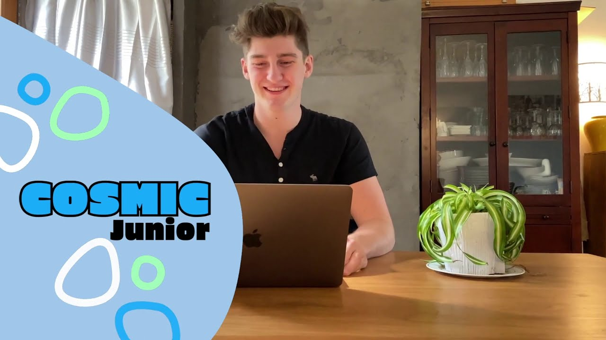

Je suis étudiant et apprends à coder en JavaScript depuis 3 mois ! J'ai
commencé à programmer mes premiers jeux et notamment le jeu
Pong.
J'aime particulièrement programmer les jeux rétros car je pense que c'est
une excellente façon d'apprendre le code de manière ludique.
J'aime jouer à de nombreux jeux vidéos. Je suis notamment très doués à Minecraft et Fortnite. Au dela de ça, j'adore faire du sport. J'ai notamment été triple médaille d'or aux JO de Rio
Après avoir essayé une session d'introduction au JavaScript gratuite, j'ai tout de suiste été emballé pour apprendre à coder ! J'ai donc appris la programmation avec Nathan, mon professeur chez Cosmic Junior lors de cours de 45 min de 1 à 3 fois par semaines en visio. Nous programmons sur Code.org un environnement génial pour commencer à apprendre !
